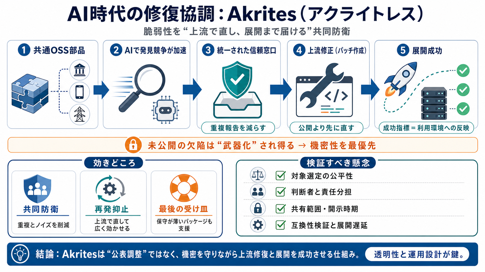

CSA Paper Highlights 6% Remediation Rate Amid 1596 ... - LinkedIn
That six percent remediation rate is the number everyone should be talking about. AI has accelerated discovery. The bott…

オープンレター（提示文書）から、Akritesが目指す「上流で直す」協調の要点を、利点と懸念まで整理します。
銀行・通信・電力などのクリティカル領域は、同じオープンソース部品（ライブラリ等）に依存しています。脆弱性が見つかっても、修正と公表は従来メンテナ体制に委ねられがちです。
文書は、AIの活用で攻撃者・防御側ともに脆弱性発見の速度が上がり、修正の追いつかなさが問題化すると訴えます。結果として、対応の前提が「ゆっくり改善」から「協調して高速修復」へ移る必要が生じます。
各社が同じライブラリを別々にスキャンし、重複報告が増えると、メンテナがノイズに埋もれ、未修正欠陥が露出しやすくなります。Akritesは「発見→修正→責任ある開示」を一つの信頼された窓口で協調する発想です。
Akritesは機密性を担保しつつ、クリティカルなオープンソースに対する脆弱性対応を「上流修正（パッチ作成）」から支えます。単に公表を統一するのではなく、パッチの“展開成功”を重視します。
公開（disclosure）が“攻撃容易化”につながる恐れがあるため、成功は「公開したか」ではなく「利用環境に反映されるまでの速度と到達」で測るべきだ、という考え方です。
文書は、未公開の欠陥を悪用され得る「武器」と同等に扱い、漏えい防止を強く求めます。目的は、協調が逆効果（攻撃加速）にならないようにすることです。
メンテナが薄い／不在のプロジェクトでも修正が届くよう、「最後のメンテナ（maintainer of last resort）」としてAkritesが関与する方針を示しています。依存関係が広いほど、この“ギャップ”を埋める仕組みが重要になります。
FAQ上、主眼は公表の統一ではなく、上流でパッチを作り、機密性を保って責任ある開示へつなげることです。さらに、最終的な成果は“展開”で捉える点に特徴があります。
AI時代のボトルネックを「技術」だけでなく「協調と運用」にまで広げる点が説得力があります。特に、機密性を前提に上流修正に集中し、成功を展開で測る考え方は、実務成果に直結しやすいと整理できます。
ビジョンは明確でも、対象選定基準・最終判断者・機密情報の共有範囲・開示タイムライン・責任分担などの具体が不足しています。参加者が多いほど調整が重くなり、高速化の目的と衝突する可能性も残ります。
Akritesは「共同防衛・上流修正・展開重視・漏えい防止」を掲げ、良い取り組みになり得ます。導入後は、(1)機密と両立するプロセス説明、(2)展開速度の測り方、(3)対象選定の公平性、(4)メンテ主導権の担保を継続検証すべきです。
That six percent remediation rate is the number everyone should be talking about. AI has accelerated discovery. The bott…
AI vulnerability discovery is accelerating, but patch management may be the real enterprise risk. Discover why speed def…
CSAI Foundation | Cloud Security Alliance CISA BOD 26-04: AI Threat Forces 3-Day Critical Patch Mandate Enterprise Impli…
The same day OpenAI announced the most significant expansion of its Daybreak cybersecurity initiative since the platform…
- Guidelines for Site Selection for all FIRST events. + CVSS v4.0 Specification Document. + Introduction to CTI as a Gen…